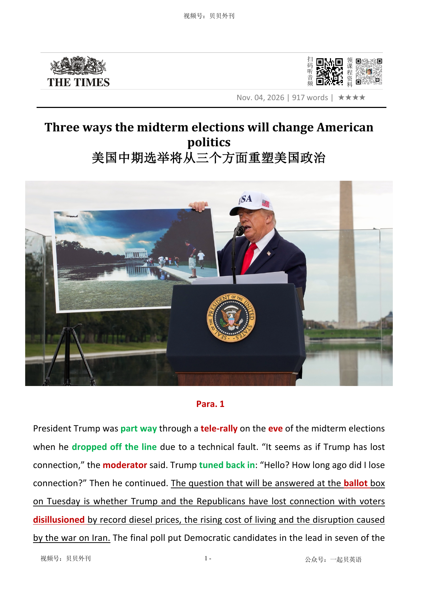

02 HEADLINE / 标题中英文解释
Three ways the midterm elections will change American politics
美国中期选举将从三个方面重塑美国政治

Three ways the midterm elections will change American politics
美国中期选举将从三个方面重塑美国政治
文章以特朗普在电话竞选集会上意外掉线开篇，并借“失去连接”追问共和党是否也正在失去选民。
生活成本上升、柴油价格创新高以及对伊朗战争带来的冲击，使部分选民对特朗普感到失望；他的最后一场竞选演讲又把大量时间用于介绍华盛顿改造工程，与选民最关心的问题相去甚远。
民调显示，民主党在多个竞争激烈的参议院选区领先。
密歇根州民主党内出现倒戈事件，却反而刺激候选人埃尔-萨耶德的支持者团结和捐款。
随着特朗普支持率下滑，民主党不仅希望夺回众议院，也开始设想拿下参议院，甚至在堪萨斯、得克萨斯等共和党传统优势州取得突破。
文章随后分析选举结果将从三个方面改变美国政治。
第一，如果共和党失去国会控制权，特朗普会更快成为“跛脚鸭”。
民主党控制众议院后可以发出传票、启动调查并限制他的立法和支出议程；若再控制参议院，还可以阻止最高法院提名。
弹劾虽然可能被提出，但参议院三分之二定罪门槛几乎无法达到。
特朗普仍可依靠行政权、外交和贸易权限以及总统否决权推进部分政策。
第二，民主党2028年总统候选人竞争将在中期选举结果揭晓后提前启动。
哈里斯、布蒂吉格、纽森和奥卡西奥-科尔特斯等人已经为各地候选人助选；奥索夫和埃尔-萨耶德等关键候选人的表现，也会被不同派别当作判断哪条政治路线更有全国吸引力的依据。
第三，如果共和党选情不佳，党内可能围绕未来方向展开激烈追责。
特朗普若在选后恢复对伊朗军事行动，还可能进一步激怒自己的基本盘。
败选会削弱副总统JD·万斯作为特朗普接班人的地位，并给特德·克鲁兹等党外缘候选人创造机会。
文章的核心观点是：这场中期选举的影响远不止席位增减，它将同时改变特朗普任期的结局和两党2028年的权力布局。
The article looks at the 2026 US midterm elections. It begins with a small accident: Donald Trump lost his phone connection during a campaign event.
The writer uses this moment to ask whether Trump and the Republican Party are also losing their connection with voters. Many people are unhappy about high living costs, record diesel prices and the effects of the war on Iran.
The Democrats believe they may win back the House of Representatives. If they have a very good night, they may also take the Senate.
This once seemed unlikely because many important seats were in strong Republican areas. However, Trump’s approval rating has fallen, and the Democrats now have a chance in several states that usually support Republicans.
The results could change American politics in three main ways. First, Trump may become a weaker president if his party loses Congress.
A Democratic House could investigate his government and limit his plans. A Democratic Senate could also block important appointments.
Removing Trump through impeachment would still be very difficult. He would also keep strong executive powers in foreign policy and trade.
Second, the election will begin the Democrats’ race for 2028. Several possible future presidential candidates are already campaigning for other Democrats.
The results in states such as Michigan and Georgia may show whether voters prefer a left-wing candidate or a more moderate one. Finally, a Republican defeat could start a serious argument inside the party.
It may weaken JD Vance’s position as Trump’s likely successor and create an opportunity for other candidates such as Ted Cruz. The article’s main point is that the midterms will do more than change seats in Congress.
They may shape the end of Trump’s presidency and both parties’ plans for 2028.
中期选举选前态势（Para 1-2） ├─ 插曲：特朗普线上集会中途掉线 ├─ 核心矛盾：高生活成本、伊战冲击共和党支持度 └─ 竞选短板：演讲脱离选民关切 选情变化与胜算（Para 3-5） ├─ 选举意义：结果将长期影响美国政坛走向 ├─ 民主党利好：议员倒戈反而提振对手筹款 └─ 竞争格局：多个传统红州成为争夺焦点 对特朗普任期的约束（Para 6-8） ├─ 国会失守后果：调查、法案受阻、提名被卡 ├─ 弹劾选项：党内分歧大，门槛极高 └─ 备选手段：依靠行政令、否决权推进议程 民主党2028初选布局（Para 9-11） ├─ 潜在候选人纷纷站台助选 ├─ 关键席位胜负左右党内路线 └─ 左派代表寄望密歇根胜选造势 共和党内部的潜在分裂（Para 12-13） ├─ 败选将触发党内路线之争 ├─ 对伊朗军事行动会激化矛盾 └─ 影响2028共和党提名竞争
President Trump was part way半途地 through a tele-rally电话集会 on the eve前夜 of the midterm elections when he dropped off the line突然掉线 due to a technical fault. “It seems as if Trump has lost connection,” the moderator主持人 said. Trump tuned back in重新接入: “Hello? How long ago did I lose connection?” Then he continued. The question that will be answered at the ballot投票选举 box on Tuesday is whether Trump and the Republicans have lost connection with voters disillusioned使理想破灭 by record diesel prices, the rising cost of living and the disruption caused by the war on Iran. The final poll put Democratic candidates in the lead in seven of the most closely contested Senate battles.
美国总统特朗普在中期选举前夕参加一场电话连线集会，进行到一半时，因技术故障突然掉线。“看来总统这边掉线了。”主持人说道。特朗普随后重新接入：“喂？我掉线多久了？”说罢，他便继续了演讲。然而，周二的选票将给出一个真正值得关注的答案：面对柴油价格创下历史新高、生活成本持续攀升，以及对伊战争带来的种种冲击，那些心生失望的选民，是否已经不再买特朗普和共和党的账？最后一轮民调显示，在竞争最为激烈的七场参议院选举中，民主党候选人均处于领先位置。
The president’s final campaign speech, which he gave at the Lincoln Memorial reflecting pool倒影池, did little to calm Republican nerves紧张情绪. He spoke at length长时间且详细地 about his makeover改造 of Washington, from the reflecting pool to the White House ballroom宴会厅 and a new helipad直升机升降坪. It seemed a far cry from与……大相径庭 voters’ priorities — though he did find time, eventually, to declare the elections “the most important midterm, I believe, in our lifetime”.
特朗普在林肯纪念堂前的倒影池畔发表了最后一场竞选演讲，却未能平息共和党阵营的不安。他花了大量篇幅大谈华盛顿的改造工程，从眼前的倒影池，到白宫宴会厅，再到新建的直升机停机坪。这番演讲显然与选民最关心的问题相去甚远。不过，他最终还是留出一句话的时间，表示，此次选举是“我们有生之年最重要的一次中期选举”。
Both Republicans and Democrats can agree on that. Whether it is a so-called blue wave, tsunami巨大的浪潮或冲击 or trickle细流 — or a surprise Republican success — the results are set to预计将 ripple扩散 across American politics to the 2028 presidential election and beyond.
这一点，共和党和民主党倒是达成了一致。无论最终出现的所谓的“蓝色浪潮”，是 “蓝色海啸”，还是仅仅是一丝细流，又或者共和党意外大获全胜，选举结果都将激起层层涟漪，影响美国政治格局，并一路延伸至2028年总统大选乃至更远的未来。
Democrats were dealt a “November surprise” on Sunday when Haley Stevens, the congresswoman美国国会女议员 who lost the Michigan Democratic primary初选 to Abdul El-Sayed, defected叛逃 from his campaign and endorsed赞同 his Republican rival, Mike Rogers. Yet in a sign her endorsement may actually be having a rallying团结起来支持 effect on El-Sayed’s base, on Monday he recorded his highest single-day fundraising筹款 haul获得的大量钱款或收获 of more than $2m. Hopes among Democrats are rising that the party could take back not just the House but, on a good night, the Senate too. To do so they need to keep all the seats they hold and flip使易主 at least four held by the Republicans.
周日，民主党遭遇了一场出乎意料的“十一月惊变”：在密歇根州民主党初选中败给阿卜杜勒·埃尔-萨耶德的众议员海莉·史蒂文斯，突然退出其阵营，转而为他的共和党对手迈克·罗杰斯背书。然而，这番倒戈非但没有削弱埃尔-萨耶德的支持基础，反而似乎激起了其支持者的团结情绪。周一，他创下个人单日筹款纪录，筹得超过200万美元。民主党人重燃希望：这一次，党派或许不仅能够夺回众议院，倘若选情足够理想，甚至有望拿下参议院。要实现这一目标，他们必须守住目前拥有的全部席位，并从共和党手中至少夺下四席。
While this was initially seen as unlikely, owing to the fact most of the seats the Democrats would need to turn blue were Republican strongholds政党势力强大的地区, the possibility has increased as Trump’s approval rating has plummeted暴跌. The Democrats have a chance of winning in Kansas, where the last time a Democrat won election to the Senate was 1932, as well as in Texas, Maine, Ohio, Alaska and Iowa. Senior Republicans are hoping that the polls are wrong and suggest many Republican voters do not speak to pollsters民意调查员. The results, whichever way they go, will dictate决定 the direction of American politics in three ways.
起初，这一切被认为希望渺茫。毕竟，民主党要想翻盘，必须攻克的多数选区原本都是共和党的传统票仓。然而，随着特朗普的支持率一路暴跌，这种可能性正在不断增加。民主党如今甚至有望在堪萨斯州取胜，该州上一次选出民主党籍参议员还要追溯到1932年。此外，得克萨斯州、缅因州、俄亥俄州、阿拉斯加州和爱荷华州，也都成为民主党可能实现突破的战场。共和党高层则寄希望于民调失准，认为许多共和党选民根本不会接受民调机构的采访。无论最终结果如何，这场选举都将在三个方面决定美国政治的走向。
First, how the Trump presidency ends. Most presidents nearing the end of their final term are regarded as a “lame duck跛脚鸭” but this is intensified加剧 when their party loses control of Congress. A Democratic majority in the House would subject Trump’s administration to使遭受 subpoenas传票 and investigations, and allow the party to constrain限制 his legislative立法的 agenda and spending priorities. Retaking the Senate would give them the power to block Supreme Court nominees and even more of his agenda.
首先，特朗普的总统任期将如何收场。大多数即将结束最后一届任期的美国总统，通常都会被视为一只“跛脚鸭”（即政治影响力逐渐衰退、施政能力受到掣肘的领导人）。而一旦其所属政党失去国会控制权，这种跛脚鸭效应便会进一步加剧。如果民主党重新掌控众议院，特朗普政府将面临传票和调查，民主党也将获得制约其立法议程和财政支出重点的权力。如果连参议院也一并拿下，民主党还将有权阻挠最高法院大法官提名，并进一步牵制特朗普的施政计划。
There is also the possibility of impeachment弹劾, though Democrats are divided on the issue, especially as conviction判罪 and removal from office would require a two-thirds majority in the Senate, an unrealistically high threshold门槛.
此外，民主党也可能推动弹劾程序。不过，党内对此意见不一。尤其是，若要真正定罪并将总统赶下台，必须获得参议院三分之二多数支持，这一门槛之高，在现实中几乎难以企及。
White House aides助手 have been game-planning制定计划 how to keep Trump’s agenda on track使某事按计划进行 without congressional approval by focusing on executive power. The president would still have broad authority over foreign policy and trade as well as federal bureaucracy官僚主义. He has already leant into充分利用 this, signing more executive orders halfway into his second term than he did in all of the first term. He can also reject Democratic congressional proposals — and has said he may become “Mr Veto否决权”.
白宫幕僚已经开始制定预案，研究如何在不获得国会批准的情况下，继续推进特朗普的施政议程，重点则是充分运用行政权力。总统在外交政策、贸易事务以及联邦行政体系方面，仍然拥有广泛的权力。事实上，特朗普已经在朝这个方向发力：第二任期才刚刚过半，他签署的行政命令数量就已超过整个第一任期的总和。他还可以否决民主党主导的国会提案，并且扬言自己或许会成为一位“否决先生”。
Second, the early dynamics动态 of the race to choose a Democratic presidential nominee for 2028 will be set by key races. Strategists say the contest that ends two years from now really begins on Wednesday.
其次，关键选战的结果，将为民主党2028年总统候选人提名之争奠定最初的格局。民主党策略人士表示，两年后的这场角逐，其实从周三选举结果揭晓的那一刻起，就已经拉开了序幕。
Democratic politicians not on the ballot — such as Kamala Harris, the former vice-president; Pete Buttigieg, a former mayor and the transport secretary under President Biden; and Gavin Newsom, the governor of California — have gone out to campaign for开展竞选活动 candidates. Alexandria Ocasio-Cortez, a New York congresswoman, is up for正参加竞选 re-election but polls so strongly in her district she has devoted campaigning time to other races
一些没有参加此次选举的民主党政客——例如前副总统卡玛拉·哈里斯、曾任市长并在拜登政府中担任交通部长的皮特·布蒂吉格，以及加州州长加文·纽森——都已经纷纷奔赴各地，为民主党候选人助阵。纽约州众议员亚历山德娅·奥卡西奥-科尔特斯虽然正在寻求连任，但她在自己的选区民调中优势明显，因此将更多竞选时间投入到其他地区的选战之中。
Jon Ossoff, who is seeking re-election as a Georgia senator, has drawn presidential speculation推测 after winning plaudits喝彩 for his rallies and campaign rhetoric言辞 on Trump administration corruption. If El-Sayed wins in Michigan, Democrats expect his victory to be cited by the left as evidence America is ready for a left-wing candidate. As Ocasio-Cortez put it表达 last month, “if Abdul can win in Michigan, anybody can win anywhere”. Many have taken that to mean El-Sayed winning increases the chance of Ocasio-Cortez running for the White House herself.
佐治亚州参议员乔恩·奥索夫正在争取连任，外界猜测的他也有意竞选总统。他在集会上的表现，以及竞选演讲中对特朗普政府腐败问题的猛烈抨击，为他赢得了不少赞誉。如果埃尔-萨耶德能够在密歇根州胜出，民主党人预计，党内左翼将把这场胜利视为一个重要信号：美国已经准备好迎接一位左翼候选人。正如奥卡西奥-科尔特斯上个月所说：“如果阿卜杜勒能在密歇根州获胜，那么任何人都能在任何地方获胜。”许多人将这番话解读为：埃尔-萨耶德若能胜选，将进一步提升奥卡西奥-科尔特斯亲自角逐白宫的可能性。
Finally, there is the Republican blame game相互推诿 should the party have a bad night. Steve Bannon, the adviser to Trump in his first term, said the party would be engulfed使陷入 in a “civil war内战” over its future from the day after election day.
最后，共和党若遭遇选举失利，党内势必掀起一场追责风暴。特朗普第一任期的顾问史蒂夫·班农表示，如果共和党选情不佳，那从选举次日起，党内就将陷入围绕未来道路展开的“内战”。
This will probably be made worse if Trump resumes military operations against Iran after the elections, which would further antagonise激怒 his base. The results will affect the debate about who should claim获得 the party’s own nomination for 2028. A bad night could make it harder for JD Vance, the vice-president, to pitch himself as把某人塑造成…… the heir apparent公认的继承人 and may give an opening for potential outsider candidates such as the Texas senator Ted Cruz.
如果特朗普在选举结束后重新对伊朗发动军事行动，这场内斗恐怕还会进一步加剧，因为此举将进一步激怒他的基本盘。此次选举结果也将影响共和党内部关于2028年总统候选人提名的争论。如果共和党遭遇失败，副总统JD·万斯想要将自己塑造成特朗普政治衣钵的继承人，恐怕就会更加困难；与此同时，得克萨斯州参议员特德·克鲁兹等潜在的局外候选人，则可能借此获得可乘之机。
电话集会；远程竞选集会（候选人通过电话或实时音频连线向支持者发表讲话的政治集会）
a political campaign rally held remotely, usually by telephone or through a live audio connection, allowing a candidate to address supporters without appearing in person
The president held a tele-rally on the eve of the midterm elections to urge supporters to vote. 总统在中期选举前夕举行了一场电话集会，敦促支持者投票。
President Trump was part way through a tele-rally on the eve of the midterm elections when he dropped off the line due to a technical fault.
美国总统特朗普在中期选举前夕参加一场电话连线集会，进行到一半时，因技术故障突然掉线。“看来总统这边掉线了。”主持人说道。特朗普随后重新接入：“喂？我掉线多久了？”说罢，他便继续了演讲。然而，周二的选票将给出一个真正值得关注的答案：面对柴油价格创下历史新高、生活成本持续攀升，以及对伊战争带来的种种冲击，那些心生失望的选民，是否已经不再买特朗普和共和党的账？最后一轮民调显示，在竞争最为激烈的七场参议院选举中，民主党候选人均处于领先位置。
（尤指宗教节假日的）前夜，前夕
the day or evening before an event, especially a religious festival or holiday
Christmas Eve (= 24 December) 圣诞前夕（12月24日）
President Trump was part way through a tele-rally on the eve of the midterm elections when he dropped off the line due to a technical fault.
美国总统特朗普在中期选举前夕参加一场电话连线集会，进行到一半时，因技术故障突然掉线。“看来总统这边掉线了。”主持人说道。特朗普随后重新接入：“喂？我掉线多久了？”说罢，他便继续了演讲。然而，周二的选票将给出一个真正值得关注的答案：面对柴油价格创下历史新高、生活成本持续攀升，以及对伊战争带来的种种冲击，那些心生失望的选民，是否已经不再买特朗普和共和党的账？最后一轮民调显示，在竞争最为激烈的七场参议院选举中，民主党候选人均处于领先位置。
(争论和谈判的) 主持人
In debates and negotiations, the moderator is the person who is in charge of the discussion and makes sure that it is conducted in a fair and organized way.
“It seems as if Trump has lost connection,” the moderator said.
美国总统特朗普在中期选举前夕参加一场电话连线集会，进行到一半时，因技术故障突然掉线。“看来总统这边掉线了。”主持人说道。特朗普随后重新接入：“喂？我掉线多久了？”说罢，他便继续了演讲。然而，周二的选票将给出一个真正值得关注的答案：面对柴油价格创下历史新高、生活成本持续攀升，以及对伊战争带来的种种冲击，那些心生失望的选民，是否已经不再买特朗普和共和党的账？最后一轮民调显示，在竞争最为激烈的七场参议院选举中，民主党候选人均处于领先位置。
重新接入；重新连线；重新收听或收看
to reconnect to a broadcast, phone call or online conversation after being disconnected or temporarily absent
Trump tuned back in after losing connection during the tele-rally. 特朗普在电话竞选集会期间掉线后，重新接入了连线。
Trump tuned back in: “Hello?
美国总统特朗普在中期选举前夕参加一场电话连线集会，进行到一半时，因技术故障突然掉线。“看来总统这边掉线了。”主持人说道。特朗普随后重新接入：“喂？我掉线多久了？”说罢，他便继续了演讲。然而，周二的选票将给出一个真正值得关注的答案：面对柴油价格创下历史新高、生活成本持续攀升，以及对伊战争带来的种种冲击，那些心生失望的选民，是否已经不再买特朗普和共和党的账？最后一轮民调显示，在竞争最为激烈的七场参议院选举中，民主党候选人均处于领先位置。
（无记名）投票选举；投票表决
the system of voting in writing and usually in secret; an occasion on which a vote is held
The chairperson is chosen by secret ballot. 主席是通过无记名投票选举产生的。
The question that will be answered at the ballot box on Tuesday is whether Trump and the Republicans have lost connection with voters disillusioned by record diesel prices, the rising cost of living and the disruption caused by the war on Iran.
美国总统特朗普在中期选举前夕参加一场电话连线集会，进行到一半时，因技术故障突然掉线。“看来总统这边掉线了。”主持人说道。特朗普随后重新接入：“喂？我掉线多久了？”说罢，他便继续了演讲。然而，周二的选票将给出一个真正值得关注的答案：面对柴油价格创下历史新高、生活成本持续攀升，以及对伊战争带来的种种冲击，那些心生失望的选民，是否已经不再买特朗普和共和党的账？最后一轮民调显示，在竞争最为激烈的七场参议院选举中，民主党候选人均处于领先位置。
使理想破灭；使失望
to make someone lose a positive belief or become disappointed
I hate to disillusion you, but not everyone is as honest as you. 我实在不愿把实情告诉你，但并非人人都像你那样诚实。
The question that will be answered at the ballot box on Tuesday is whether Trump and the Republicans have lost connection with voters disillusioned by record diesel prices, the rising cost of living and the disruption caused by the war on Iran.
美国总统特朗普在中期选举前夕参加一场电话连线集会，进行到一半时，因技术故障突然掉线。“看来总统这边掉线了。”主持人说道。特朗普随后重新接入：“喂？我掉线多久了？”说罢，他便继续了演讲。然而，周二的选票将给出一个真正值得关注的答案：面对柴油价格创下历史新高、生活成本持续攀升，以及对伊战争带来的种种冲击，那些心生失望的选民，是否已经不再买特朗普和共和党的账？最后一轮民调显示，在竞争最为激烈的七场参议院选举中，民主党候选人均处于领先位置。
倒影池
a shallow pool of still water, often found in gardens or near buildings, designed to reflect the surrounding scenery or architecture
The Washington Monument is beautifully reflected in the reflecting pool. 华盛顿纪念碑的倒影映在水池中，景色十分优美。
The president’s final campaign speech, which he gave at the Lincoln Memorial reflecting pool, did little to calm Republican nerves.
特朗普在林肯纪念堂前的倒影池畔发表了最后一场竞选演讲，却未能平息共和党阵营的不安。他花了大量篇幅大谈华盛顿的改造工程，从眼前的倒影池，到白宫宴会厅，再到新建的直升机停机坪。这番演讲显然与选民最关心的问题相去甚远。不过，他最终还是留出一句话的时间，表示，此次选举是“我们有生之年最重要的一次中期选举”。
紧张情绪；焦虑
feelings of worry or anxiety
Even after years as a singer, he still suffers from nerves before a performance.
The president’s final campaign speech, which he gave at the Lincoln Memorial reflecting pool, did little to calm Republican nerves.
特朗普在林肯纪念堂前的倒影池畔发表了最后一场竞选演讲，却未能平息共和党阵营的不安。他花了大量篇幅大谈华盛顿的改造工程，从眼前的倒影池，到白宫宴会厅，再到新建的直升机停机坪。这番演讲显然与选民最关心的问题相去甚远。不过，他最终还是留出一句话的时间，表示，此次选举是“我们有生之年最重要的一次中期选举”。
改造；翻新；改头换面
a complete change or improvement in the appearance, design or style of someone or something
The city has undergone a major makeover, with new parks, shops and public spaces. 这座城市经历了大规模改造，建起了新的公园、商店和公共空间。
He spoke at length about his makeover of Washington, from the reflecting pool to the White House ballroom and a new helipad.
特朗普在林肯纪念堂前的倒影池畔发表了最后一场竞选演讲，却未能平息共和党阵营的不安。他花了大量篇幅大谈华盛顿的改造工程，从眼前的倒影池，到白宫宴会厅，再到新建的直升机停机坪。这番演讲显然与选民最关心的问题相去甚远。不过，他最终还是留出一句话的时间，表示，此次选举是“我们有生之年最重要的一次中期选举”。
宴会厅；舞厅
a large room used for formal dances, dinners or social events
The president hosted a formal dinner in the White House ballroom. 总统在白宫宴会厅举办了一场正式晚宴。
He spoke at length about his makeover of Washington, from the reflecting pool to the White House ballroom and a new helipad.
特朗普在林肯纪念堂前的倒影池畔发表了最后一场竞选演讲，却未能平息共和党阵营的不安。他花了大量篇幅大谈华盛顿的改造工程，从眼前的倒影池，到白宫宴会厅，再到新建的直升机停机坪。这番演讲显然与选民最关心的问题相去甚远。不过，他最终还是留出一句话的时间，表示，此次选举是“我们有生之年最重要的一次中期选举”。
直升机升降坪
A helipad is a place where helicopters can land and take off.
Each house had a helipad for a fast evacuation. 每所房子都有一个供快速撤离用的直升机升降坪。
He spoke at length about his makeover of Washington, from the reflecting pool to the White House ballroom and a new helipad.
特朗普在林肯纪念堂前的倒影池畔发表了最后一场竞选演讲，却未能平息共和党阵营的不安。他花了大量篇幅大谈华盛顿的改造工程，从眼前的倒影池，到白宫宴会厅，再到新建的直升机停机坪。这番演讲显然与选民最关心的问题相去甚远。不过，他最终还是留出一句话的时间，表示，此次选举是“我们有生之年最重要的一次中期选举”。
巨大的浪潮或冲击
a huge sea wave; a sudden and powerful increase or political wave
The earthquake triggered a tsunami that devastated coastal communities.
Whether it is a so-called blue wave, tsunami or trickle — or a surprise Republican success — the results are set to ripple across American politics to the 2028 presidential election and beyond.
这一点，共和党和民主党倒是达成了一致。无论最终出现的所谓的“蓝色浪潮”，是 “蓝色海啸”，还是仅仅是一丝细流，又或者共和党意外大获全胜，选举结果都将激起层层涟漪，影响美国政治格局，并一路延伸至2028年总统大选乃至更远的未来。
细流；涓流；滴流
a small, slow and steady flow of liquid
A trickle of water ran down the side of the wall. 一股细细的水流沿着墙壁流了下来。
Whether it is a so-called blue wave, tsunami or trickle — or a surprise Republican success — the results are set to ripple across American politics to the 2028 presidential election and beyond.
这一点，共和党和民主党倒是达成了一致。无论最终出现的所谓的“蓝色浪潮”，是 “蓝色海啸”，还是仅仅是一丝细流，又或者共和党意外大获全胜，选举结果都将激起层层涟漪，影响美国政治格局，并一路延伸至2028年总统大选乃至更远的未来。
扩散；产生连锁影响
to spread through a group or situation like a wave
The sea rippled and sparkled.大海波光粼粼。 2. to spread through a person or a group of people like a wave扩散；涌起
Whether it is a so-called blue wave, tsunami or trickle — or a surprise Republican success — the results are set to ripple across American politics to the 2028 presidential election and beyond.
这一点，共和党和民主党倒是达成了一致。无论最终出现的所谓的“蓝色浪潮”，是 “蓝色海啸”，还是仅仅是一丝细流，又或者共和党意外大获全胜，选举结果都将激起层层涟漪，影响美国政治格局，并一路延伸至2028年总统大选乃至更远的未来。
美国国会女议员（尤指众议院议员）
a female member of the U.S. Congress, especially the House of Representatives
Democrats were dealt a “November surprise” on Sunday when Haley Stevens, the congresswoman who lost the Michigan Democratic primary to Abdul El-Sayed, defected from his campaign and endorsed his Republican rival, Mike Rogers.
周日，民主党遭遇了一场出乎意料的“十一月惊变”：在密歇根州民主党初选中败给阿卜杜勒·埃尔-萨耶德的众议员海莉·史蒂文斯，突然退出其阵营，转而为他的共和党对手迈克·罗杰斯背书。然而，这番倒戈非但没有削弱埃尔-萨耶德的支持基础，反而似乎激起了其支持者的团结情绪。周一，他创下个人单日筹款纪录，筹得超过200万美元。民主党人重燃希望：这一次，党派或许不仅能够夺回众议院，倘若选情足够理想，甚至有望拿下参议院。要实现这一目标，他们必须守住目前拥有的…
（美国）初选
an election in which people in a particular area vote to choose a candidate for a future important election
the Illinois primary伊利诺伊州的初选
Democrats were dealt a “November surprise” on Sunday when Haley Stevens, the congresswoman who lost the Michigan Democratic primary to Abdul El-Sayed, defected from his campaign and endorsed his Republican rival, Mike Rogers.
周日，民主党遭遇了一场出乎意料的“十一月惊变”：在密歇根州民主党初选中败给阿卜杜勒·埃尔-萨耶德的众议员海莉·史蒂文斯，突然退出其阵营，转而为他的共和党对手迈克·罗杰斯背书。然而，这番倒戈非但没有削弱埃尔-萨耶德的支持基础，反而似乎激起了其支持者的团结情绪。周一，他创下个人单日筹款纪录，筹得超过200万美元。民主党人重燃希望：这一次，党派或许不仅能够夺回众议院，倘若选情足够理想，甚至有望拿下参议院。要实现这一目标，他们必须守住目前拥有的…
叛逃；变节；倒戈；脱离原组织转投另一方
to leave a country, political party, organisation or group and join an opposing one, often because of a change in loyalty or belief
Several lawmakers defected from the ruling party to join the opposition. 几名议员脱离执政党，转而加入反对党。
Democrats were dealt a “November surprise” on Sunday when Haley Stevens, the congresswoman who lost the Michigan Democratic primary to Abdul El-Sayed, defected from his campaign and endorsed his Republican rival, Mike Rogers.
周日，民主党遭遇了一场出乎意料的“十一月惊变”：在密歇根州民主党初选中败给阿卜杜勒·埃尔-萨耶德的众议员海莉·史蒂文斯，突然退出其阵营，转而为他的共和党对手迈克·罗杰斯背书。然而，这番倒戈非但没有削弱埃尔-萨耶德的支持基础，反而似乎激起了其支持者的团结情绪。周一，他创下个人单日筹款纪录，筹得超过200万美元。民主党人重燃希望：这一次，党派或许不仅能够夺回众议院，倘若选情足够理想，甚至有望拿下参议院。要实现这一目标，他们必须守住目前拥有的…
（公开）赞同，支持，认可
to say publicly that you support a person, statement or course of action
I wholeheartedly endorse his remarks.我真诚地赞同他的话。
Democrats were dealt a “November surprise” on Sunday when Haley Stevens, the congresswoman who lost the Michigan Democratic primary to Abdul El-Sayed, defected from his campaign and endorsed his Republican rival, Mike Rogers.
周日，民主党遭遇了一场出乎意料的“十一月惊变”：在密歇根州民主党初选中败给阿卜杜勒·埃尔-萨耶德的众议员海莉·史蒂文斯，突然退出其阵营，转而为他的共和党对手迈克·罗杰斯背书。然而，这番倒戈非但没有削弱埃尔-萨耶德的支持基础，反而似乎激起了其支持者的团结情绪。周一，他创下个人单日筹款纪录，筹得超过200万美元。民主党人重燃希望：这一次，党派或许不仅能够夺回众议院，倘若选情足够理想，甚至有望拿下参议院。要实现这一目标，他们必须守住目前拥有的…
（使）团结起来支持
to come together or bring people together in support
The president urged voters to rally behind the party's candidate. 总统敦促选民团结起来，支持该党的候选人。
President Trump was part way through a tele-rally on the eve of the midterm elections when he dropped off the line due to a technical fault.
美国总统特朗普在中期选举前夕参加一场电话连线集会，进行到一半时，因技术故障突然掉线。“看来总统这边掉线了。”主持人说道。特朗普随后重新接入：“喂？我掉线多久了？”说罢，他便继续了演讲。然而，周二的选票将给出一个真正值得关注的答案：面对柴油价格创下历史新高、生活成本持续攀升，以及对伊战争带来的种种冲击，那些心生失望的选民，是否已经不再买特朗普和共和党的账？最后一轮民调显示，在竞争最为激烈的七场参议院选举中，民主党候选人均处于领先位置。
筹款；募捐；资金募集
the activity of collecting money from people or organizations for a particular purpose, especially for a charity, political campaign, or project
The candidate has built a strong fundraising network ahead of the midterm elections.
Yet in a sign her endorsement may actually be having a rallying effect on El-Sayed’s base, on Monday he recorded his highest single-day fundraising haul of more than $2m.
周日，民主党遭遇了一场出乎意料的“十一月惊变”：在密歇根州民主党初选中败给阿卜杜勒·埃尔-萨耶德的众议员海莉·史蒂文斯，突然退出其阵营，转而为他的共和党对手迈克·罗杰斯背书。然而，这番倒戈非但没有削弱埃尔-萨耶德的支持基础，反而似乎激起了其支持者的团结情绪。周一，他创下个人单日筹款纪录，筹得超过200万美元。民主党人重燃希望：这一次，党派或许不仅能够夺回众议院，倘若选情足够理想，甚至有望拿下参议院。要实现这一目标，他们必须守住目前拥有的…
（一次）获得的大量钱款或收获
a large amount of something collected or obtained at one time
The party made a substantial haul of campaign donations in the final weeks before the election. 该党在选举前的最后几周筹集到了大笔竞选捐款。
Yet in a sign her endorsement may actually be having a rallying effect on El-Sayed’s base, on Monday he recorded his highest single-day fundraising haul of more than $2m.
周日，民主党遭遇了一场出乎意料的“十一月惊变”：在密歇根州民主党初选中败给阿卜杜勒·埃尔-萨耶德的众议员海莉·史蒂文斯，突然退出其阵营，转而为他的共和党对手迈克·罗杰斯背书。然而，这番倒戈非但没有削弱埃尔-萨耶德的支持基础，反而似乎激起了其支持者的团结情绪。周一，他创下个人单日筹款纪录，筹得超过200万美元。民主党人重燃希望：这一次，党派或许不仅能够夺回众议院，倘若选情足够理想，甚至有望拿下参议院。要实现这一目标，他们必须守住目前拥有的…
使（席位）易主；翻转
to change a political seat from one party to another
She felt her heart flip (= with excitement, etc.) .她感到心潮澎湃。
To do so they need to keep all the seats they hold and flip at least four held by the Republicans.
周日，民主党遭遇了一场出乎意料的“十一月惊变”：在密歇根州民主党初选中败给阿卜杜勒·埃尔-萨耶德的众议员海莉·史蒂文斯，突然退出其阵营，转而为他的共和党对手迈克·罗杰斯背书。然而，这番倒戈非但没有削弱埃尔-萨耶德的支持基础，反而似乎激起了其支持者的团结情绪。周一，他创下个人单日筹款纪录，筹得超过200万美元。民主党人重燃希望：这一次，党派或许不仅能够夺回众议院，倘若选情足够理想，甚至有望拿下参议院。要实现这一目标，他们必须守住目前拥有的…
政党势力强大的地区；票仓
an area where a political party has very strong support
a Republican stronghold/a stronghold of Republicanism共和党势力强大的地区 2. a castle or a place that is strongly built and difficult to attack堡垒；要塞；据点
While this was initially seen as unlikely, owing to the fact most of the seats the Democrats would need to turn blue were Republican strongholds, the possibility has increased as Trump’s approval rating has plummeted.
起初，这一切被认为希望渺茫。毕竟，民主党要想翻盘，必须攻克的多数选区原本都是共和党的传统票仓。然而，随着特朗普的支持率一路暴跌，这种可能性正在不断增加。民主党如今甚至有望在堪萨斯州取胜，该州上一次选出民主党籍参议员还要追溯到1932年。此外，得克萨斯州、缅因州、俄亥俄州、阿拉斯加州和爱荷华州，也都成为民主党可能实现突破的战场。共和党高层则寄希望于民调失准，认为许多共和党选民根本不会接受民调机构的采访。无论最终结果如何，这场选举都将在三个…
暴跌；速降
to fall suddenly and quickly from a high level or position
Share prices plummeted to an all-time low.股票价格暴跌到历史最低点。
While this was initially seen as unlikely, owing to the fact most of the seats the Democrats would need to turn blue were Republican strongholds, the possibility has increased as Trump’s approval rating has plummeted.
起初，这一切被认为希望渺茫。毕竟，民主党要想翻盘，必须攻克的多数选区原本都是共和党的传统票仓。然而，随着特朗普的支持率一路暴跌，这种可能性正在不断增加。民主党如今甚至有望在堪萨斯州取胜，该州上一次选出民主党籍参议员还要追溯到1932年。此外，得克萨斯州、缅因州、俄亥俄州、阿拉斯加州和爱荷华州，也都成为民主党可能实现突破的战场。共和党高层则寄希望于民调失准，认为许多共和党选民根本不会接受民调机构的采访。无论最终结果如何，这场选举都将在三个…
民意调查员；民调机构；民意测验专家
a person or organization that conducts opinion polls, especially to find out what voters think about political candidates or issues
Pollsters are trying to determine which issues matter most to voters ahead of the midterm elections. 民调人员正试图了解，在中期选举前，哪些议题对选民最为重要。
Senior Republicans are hoping that the polls are wrong and suggest many Republican voters do not speak to pollsters.
起初，这一切被认为希望渺茫。毕竟，民主党要想翻盘，必须攻克的多数选区原本都是共和党的传统票仓。然而，随着特朗普的支持率一路暴跌，这种可能性正在不断增加。民主党如今甚至有望在堪萨斯州取胜，该州上一次选出民主党籍参议员还要追溯到1932年。此外，得克萨斯州、缅因州、俄亥俄州、阿拉斯加州和爱荷华州，也都成为民主党可能实现突破的战场。共和党高层则寄希望于民调失准，认为许多共和党选民根本不会接受民调机构的采访。无论最终结果如何，这场选举都将在三个…
决定；支配
to control or decide how something develops
He dictated a letter to his secretary.他向秘书口授信稿。 2. to tell sb what to do, especially in an annoying way（尤指以令人不快的方式）指使，强行规定
The results, whichever way they go, will dictate the direction of American politics in three ways.
起初，这一切被认为希望渺茫。毕竟，民主党要想翻盘，必须攻克的多数选区原本都是共和党的传统票仓。然而，随着特朗普的支持率一路暴跌，这种可能性正在不断增加。民主党如今甚至有望在堪萨斯州取胜，该州上一次选出民主党籍参议员还要追溯到1932年。此外，得克萨斯州、缅因州、俄亥俄州、阿拉斯加州和爱荷华州，也都成为民主党可能实现突破的战场。共和党高层则寄希望于民调失准，认为许多共和党选民根本不会接受民调机构的采访。无论最终结果如何，这场选举都将在三个…
跛脚鸭；任期即将结束、影响力和执政能力受到削弱的政治人物或政府官员
a politician or government official who is nearing the end of their term and has limited power or influence, especially because a successor has already been elected
The president could become a lame duck if his party loses control of Congress in the midterm elections.如果总统所在政党在中期选举中失去国会控制权，他可能会沦为一位影响力受限的“跛脚鸭”总统。
Most presidents nearing the end of their final term are regarded as a “lame duck” but this is intensified when their party loses control of Congress.
首先，特朗普的总统任期将如何收场。大多数即将结束最后一届任期的美国总统，通常都会被视为一只“跛脚鸭”（即政治影响力逐渐衰退、施政能力受到掣肘的领导人）。而一旦其所属政党失去国会控制权，这种跛脚鸭效应便会进一步加剧。如果民主党重新掌控众议院，特朗普政府将面临传票和调查，民主党也将获得制约其立法议程和财政支出重点的权力。如果连参议院也一并拿下，民主党还将有权阻挠最高法院大法官提名，并进一步牵制特朗普的施政计划。
加剧；增强
to become or make something stronger
Violence intensified during the night.在夜间暴力活动加剧了。 subject to phr. If you subject someone to something unpleasant, you make them experience it. 使遭受
Most presidents nearing the end of their final term are regarded as a “lame duck” but this is intensified when their party loses control of Congress.
首先，特朗普的总统任期将如何收场。大多数即将结束最后一届任期的美国总统，通常都会被视为一只“跛脚鸭”（即政治影响力逐渐衰退、施政能力受到掣肘的领导人）。而一旦其所属政党失去国会控制权，这种跛脚鸭效应便会进一步加剧。如果民主党重新掌控众议院，特朗普政府将面临传票和调查，民主党也将获得制约其立法议程和财政支出重点的权力。如果连参议院也一并拿下，民主党还将有权阻挠最高法院大法官提名，并进一步牵制特朗普的施政计划。
(传唤出庭作证的) 传票
A subpoena is a legal document telling someone that they must attend a court of law and give evidence as a witness.
He has been served with a subpoena to answer the charges in court. 他被送达了一张出庭应诉的传票。
A Democratic majority in the House would subject Trump’s administration to subpoenas and investigations, and allow the party to constrain his legislative agenda and spending priorities.
首先，特朗普的总统任期将如何收场。大多数即将结束最后一届任期的美国总统，通常都会被视为一只“跛脚鸭”（即政治影响力逐渐衰退、施政能力受到掣肘的领导人）。而一旦其所属政党失去国会控制权，这种跛脚鸭效应便会进一步加剧。如果民主党重新掌控众议院，特朗普政府将面临传票和调查，民主党也将获得制约其立法议程和财政支出重点的权力。如果连参议院也一并拿下，民主党还将有权阻挠最高法院大法官提名，并进一步牵制特朗普的施政计划。
限制；限定；约束
to restrict or limit sb/sth
Research has been constrained by a lack of funds.研究工作因经费不足而受限制。
A Democratic majority in the House would subject Trump’s administration to subpoenas and investigations, and allow the party to constrain his legislative agenda and spending priorities.
首先，特朗普的总统任期将如何收场。大多数即将结束最后一届任期的美国总统，通常都会被视为一只“跛脚鸭”（即政治影响力逐渐衰退、施政能力受到掣肘的领导人）。而一旦其所属政党失去国会控制权，这种跛脚鸭效应便会进一步加剧。如果民主党重新掌控众议院，特朗普政府将面临传票和调查，民主党也将获得制约其立法议程和财政支出重点的权力。如果连参议院也一并拿下，民主党还将有权阻挠最高法院大法官提名，并进一步牵制特朗普的施政计划。
立法的；制定法律的
connected with the act of making and passing laws
a legislative assembly/body/council 立法议会╱机构╱委员会
A Democratic majority in the House would subject Trump’s administration to subpoenas and investigations, and allow the party to constrain his legislative agenda and spending priorities.
首先，特朗普的总统任期将如何收场。大多数即将结束最后一届任期的美国总统，通常都会被视为一只“跛脚鸭”（即政治影响力逐渐衰退、施政能力受到掣肘的领导人）。而一旦其所属政党失去国会控制权，这种跛脚鸭效应便会进一步加剧。如果民主党重新掌控众议院，特朗普政府将面临传票和调查，民主党也将获得制约其立法议程和财政支出重点的权力。如果连参议院也一并拿下，民主党还将有权阻挠最高法院大法官提名，并进一步牵制特朗普的施政计划。
弹劾; 控告
The impeachment of a senior official is the process of charging them with a crime that makes them unfit for office.
There are grounds for impeachment. 有数个弹劾的理由。
There is also the possibility of impeachment, though Democrats are divided on the issue, especially as conviction and removal from office would require a two-thirds majority in the Senate, an unrealistically high threshold.
此外，民主党也可能推动弹劾程序。不过，党内对此意见不一。尤其是，若要真正定罪并将总统赶下台，必须获得参议院三分之二多数支持，这一门槛之高，在现实中几乎难以企及。
判罪；定罪；证明有罪
the act of finding sb guilty of a crime in court; the fact of having been found guilty
She has six previous convictions for theft.她有六次盗窃前科。
There is also the possibility of impeachment, though Democrats are divided on the issue, especially as conviction and removal from office would require a two-thirds majority in the Senate, an unrealistically high threshold.
此外，民主党也可能推动弹劾程序。不过，党内对此意见不一。尤其是，若要真正定罪并将总统赶下台，必须获得参议院三分之二多数支持，这一门槛之高，在现实中几乎难以企及。
门槛；门口
1. the floor or ground at the bottom of a doorway , considered as the entrance to a building or room
She stood hesitating on the threshold.她站在门口，犹豫不决。 2. the level at which sth starts to happen or have an effect阈；界；起始点
There is also the possibility of impeachment, though Democrats are divided on the issue, especially as conviction and removal from office would require a two-thirds majority in the Senate, an unrealistically high threshold.
此外，民主党也可能推动弹劾程序。不过，党内对此意见不一。尤其是，若要真正定罪并将总统赶下台，必须获得参议院三分之二多数支持，这一门槛之高，在现实中几乎难以企及。
（尤指从政者的）助手
a person who helps another person, especially a politician, in their job
White House aides白宫助理
White House aides have been game-planning how to keep Trump’s agenda on track without congressional approval by focusing on executive power.
白宫幕僚已经开始制定预案，研究如何在不获得国会批准的情况下，继续推进特朗普的施政议程，重点则是充分运用行政权力。总统在外交政策、贸易事务以及联邦行政体系方面，仍然拥有广泛的权力。事实上，特朗普已经在朝这个方向发力：第二任期才刚刚过半，他签署的行政命令数量就已超过整个第一任期的总和。他还可以否决民主党主导的国会提案，并且扬言自己或许会成为一位“否决先生”。
制定计划；谋划策略；为……制定行动方案
to develop a plan or strategy for achieving a particular goal, especially in a competitive situation
The campaign team is game-planning its strategy for the final weeks before the election. 竞选团队正在为选举前的最后几周制定行动策略。
White House aides have been game-planning how to keep Trump’s agenda on track without congressional approval by focusing on executive power.
白宫幕僚已经开始制定预案，研究如何在不获得国会批准的情况下，继续推进特朗普的施政议程，重点则是充分运用行政权力。总统在外交政策、贸易事务以及联邦行政体系方面，仍然拥有广泛的权力。事实上，特朗普已经在朝这个方向发力：第二任期才刚刚过半，他签署的行政命令数量就已超过整个第一任期的总和。他还可以否决民主党主导的国会提案，并且扬言自己或许会成为一位“否决先生”。
使某事按计划进行；确保某事顺利推进
to make sure that something continues to develop or progress as planned and is likely to achieve its intended goal
The campaign manager worked hard to keep the election campaign on track despite unexpected setbacks. 尽管遭遇意外挫折，竞选经理仍努力确保竞选活动按计划推进。
White House aides have been game-planning how to keep Trump’s agenda on track without congressional approval by focusing on executive power.
白宫幕僚已经开始制定预案，研究如何在不获得国会批准的情况下，继续推进特朗普的施政议程，重点则是充分运用行政权力。总统在外交政策、贸易事务以及联邦行政体系方面，仍然拥有广泛的权力。事实上，特朗普已经在朝这个方向发力：第二任期才刚刚过半，他签署的行政命令数量就已超过整个第一任期的总和。他还可以否决民主党主导的国会提案，并且扬言自己或许会成为一位“否决先生”。
官僚主义；官僚作风
1. the system of official rules and ways of doing things that a government or an organization has, especially when these seem to be too complicated
unnecessary/excessive bureaucracy 不必要的官僚式繁文缛节；过分的官僚作风 2. a system of government in which there are a large number of state officials who are not elected; a country with such a system官僚体制；实行官僚体制的国家
The president would still have broad authority over foreign policy and trade as well as federal bureaucracy.
白宫幕僚已经开始制定预案，研究如何在不获得国会批准的情况下，继续推进特朗普的施政议程，重点则是充分运用行政权力。总统在外交政策、贸易事务以及联邦行政体系方面，仍然拥有广泛的权力。事实上，特朗普已经在朝这个方向发力：第二任期才刚刚过半，他签署的行政命令数量就已超过整个第一任期的总和。他还可以否决民主党主导的国会提案，并且扬言自己或许会成为一位“否决先生”。
充分利用；着力于
to make full use of something or give it more attention
The candidate decided to lean into his outsider image rather than distance himself from it. 这位候选人决定进一步强化自己的“局外人”形象，而不是刻意与之保持距离。
He has already leant into this, signing more executive orders halfway into his second term than he did in all of the first term.
白宫幕僚已经开始制定预案，研究如何在不获得国会批准的情况下，继续推进特朗普的施政议程，重点则是充分运用行政权力。总统在外交政策、贸易事务以及联邦行政体系方面，仍然拥有广泛的权力。事实上，特朗普已经在朝这个方向发力：第二任期才刚刚过半，他签署的行政命令数量就已超过整个第一任期的总和。他还可以否决民主党主导的国会提案，并且扬言自己或许会成为一位“否决先生”。
否决权
the right to refuse to allow sth to be done, especially the right to stop a law from being passed or a decision from being taken
The British government used its veto to block the proposal. 英国政府行使其否决权阻止了这项提案。
He can also reject Democratic congressional proposals — and has said he may become “Mr Veto”.
白宫幕僚已经开始制定预案，研究如何在不获得国会批准的情况下，继续推进特朗普的施政议程，重点则是充分运用行政权力。总统在外交政策、贸易事务以及联邦行政体系方面，仍然拥有广泛的权力。事实上，特朗普已经在朝这个方向发力：第二任期才刚刚过半，他签署的行政命令数量就已超过整个第一任期的总和。他还可以否决民主党主导的国会提案，并且扬言自己或许会成为一位“否决先生”。
动态；关系；相互作用；发展变化的规律
the forces, relationships, or processes that influence how a situation, group, or system develops or changes
The election could change the political dynamics in Congress. 这场选举可能改变国会内部的政治格局。
Second, the early dynamics of the race to choose a Democratic presidential nominee for 2028 will be set by key races.
其次，关键选战的结果，将为民主党2028年总统候选人提名之争奠定最初的格局。民主党策略人士表示，两年后的这场角逐，其实从周三选举结果揭晓的那一刻起，就已经拉开了序幕。
开展竞选活动；为……助选
to take part in planned activities to win an election or support a candidate
We are campaigning for law reform. 我们正从事法律改革运动。
Democratic politicians not on the ballot — such as Kamala Harris, the former vice-president; Pete Buttigieg, a former mayor and the transport secretary under President Biden; and Gavin Newsom, the governor of California — have gone out to campaign for candidat…
一些没有参加此次选举的民主党政客——例如前副总统卡玛拉·哈里斯、曾任市长并在拜登政府中担任交通部长的皮特·布蒂吉格，以及加州州长加文·纽森——都已经纷纷奔赴各地，为民主党候选人助阵。纽约州众议员亚历山德娅·奥卡西奥-科尔特斯虽然正在寻求连任，但她在自己的选区民调中优势明显，因此将更多竞选时间投入到其他地区的选战之中。
推测；猜测；推断
the act of forming opinions about what has happened or what might happen without knowing all the facts
There was widespread speculation that she was going to resign.人们纷纷推测她将辞职。
Jon Ossoff, who is seeking re-election as a Georgia senator, has drawn presidential speculation after winning plaudits for his rallies and campaign rhetoric on Trump administration corruption.
佐治亚州参议员乔恩·奥索夫正在争取连任，外界猜测的他也有意竞选总统。他在集会上的表现，以及竞选演讲中对特朗普政府腐败问题的猛烈抨击，为他赢得了不少赞誉。如果埃尔-萨耶德能够在密歇根州胜出，民主党人预计，党内左翼将把这场胜利视为一个重要信号：美国已经准备好迎接一位左翼候选人。正如奥卡西奥-科尔特斯上个月所说：“如果阿卜杜勒能在密歇根州获胜，那么任何人都能在任何地方获胜。”许多人将这番话解读为：埃尔-萨耶德若能胜选，将进一步提升奥卡西奥-科…
喝彩; 赞扬
If a person or a thing receives plaudits from a group of people, those people express their admiration for or approval of that person or thing.
They won plaudits and prizes for their accomplished films. 他们因其高水准的电影赢得了赞扬和奖项。
Jon Ossoff, who is seeking re-election as a Georgia senator, has drawn presidential speculation after winning plaudits for his rallies and campaign rhetoric on Trump administration corruption.
佐治亚州参议员乔恩·奥索夫正在争取连任，外界猜测的他也有意竞选总统。他在集会上的表现，以及竞选演讲中对特朗普政府腐败问题的猛烈抨击，为他赢得了不少赞誉。如果埃尔-萨耶德能够在密歇根州胜出，民主党人预计，党内左翼将把这场胜利视为一个重要信号：美国已经准备好迎接一位左翼候选人。正如奥卡西奥-科尔特斯上个月所说：“如果阿卜杜勒能在密歇根州获胜，那么任何人都能在任何地方获胜。”许多人将这番话解读为：埃尔-萨耶德若能胜选，将进一步提升奥卡西奥-科…
言辞；说辞
language used to influence or persuade people
the rhetoric of political slogans政治口号的虚华辞藻
Jon Ossoff, who is seeking re-election as a Georgia senator, has drawn presidential speculation after winning plaudits for his rallies and campaign rhetoric on Trump administration corruption.
佐治亚州参议员乔恩·奥索夫正在争取连任，外界猜测的他也有意竞选总统。他在集会上的表现，以及竞选演讲中对特朗普政府腐败问题的猛烈抨击，为他赢得了不少赞誉。如果埃尔-萨耶德能够在密歇根州胜出，民主党人预计，党内左翼将把这场胜利视为一个重要信号：美国已经准备好迎接一位左翼候选人。正如奥卡西奥-科尔特斯上个月所说：“如果阿卜杜勒能在密歇根州获胜，那么任何人都能在任何地方获胜。”许多人将这番话解读为：埃尔-萨耶德若能胜选，将进一步提升奥卡西奥-科…
表达、表述（想法或话语）
to express an idea or remark in a particular way
He admitted the security forces might have made some mistakes, as he put it. 如他所说的，他承认治安部队可能犯了一些错误。
As Ocasio-Cortez put it last month, “if Abdul can win in Michigan, anybody can win anywhere”.
佐治亚州参议员乔恩·奥索夫正在争取连任，外界猜测的他也有意竞选总统。他在集会上的表现，以及竞选演讲中对特朗普政府腐败问题的猛烈抨击，为他赢得了不少赞誉。如果埃尔-萨耶德能够在密歇根州胜出，民主党人预计，党内左翼将把这场胜利视为一个重要信号：美国已经准备好迎接一位左翼候选人。正如奥卡西奥-科尔特斯上个月所说：“如果阿卜杜勒能在密歇根州获胜，那么任何人都能在任何地方获胜。”许多人将这番话解读为：埃尔-萨耶德若能胜选，将进一步提升奥卡西奥-科…
相互推诿；互相指责；推卸责任的局面
a situation in which people or groups try to blame one another for a problem or failure instead of accepting responsibility
After the election defeat, party leaders started playing the blame game. 选举失利后，党派领导人开始相互推卸责任。
Finally, there is the Republican blame game should the party have a bad night.
最后，共和党若遭遇选举失利，党内势必掀起一场追责风暴。特朗普第一任期的顾问史蒂夫·班农表示，如果共和党选情不佳，那从选举次日起，党内就将陷入围绕未来道路展开的“内战”。
使陷入；吞没
to surround, cover or affect something very strongly
He was engulfed by a crowd of reporters.他被一群记者团团围住。
Steve Bannon, the adviser to Trump in his first term, said the party would be engulfed in a “civil war” over its future from the day after election day.
最后，共和党若遭遇选举失利，党内势必掀起一场追责风暴。特朗普第一任期的顾问史蒂夫·班农表示，如果共和党选情不佳，那从选举次日起，党内就将陷入围绕未来道路展开的“内战”。
内战；国内战争
a war between groups of people within the same country, often fought over political power, territory, or ideology
The country descended into civil war after years of political instability. 多年政治动荡之后，这个国家陷入了内战。
Steve Bannon, the adviser to Trump in his first term, said the party would be engulfed in a “civil war” over its future from the day after election day.
最后，共和党若遭遇选举失利，党内势必掀起一场追责风暴。特朗普第一任期的顾问史蒂夫·班农表示，如果共和党选情不佳，那从选举次日起，党内就将陷入围绕未来道路展开的“内战”。
激怒；惹恼；使对立；招致……的反感或反对
to make someone dislike or oppose you by deliberately annoying, irritating, or provoking them
The president's remarks risk antagonising voters who are already unhappy with his policies. 总统的言论可能会激怒那些本就对其政策不满的选民。
This will probably be made worse if Trump resumes military operations against Iran after the elections, which would further antagonise his base.
如果特朗普在选举结束后重新对伊朗发动军事行动，这场内斗恐怕还会进一步加剧，因为此举将进一步激怒他的基本盘。此次选举结果也将影响共和党内部关于2028年总统候选人提名的争论。如果共和党遭遇失败，副总统JD·万斯想要将自己塑造成特朗普政治衣钵的继承人，恐怕就会更加困难；与此同时，得克萨斯州参议员特德·克鲁兹等潜在的局外候选人，则可能借此获得可乘之机。
获得；赢得；取得
to gain, win or achieve sth
She has finally claimed a place on the team.她终于成了那支队的队员。
The results will affect the debate about who should claim the party’s own nomination for 2028.
如果特朗普在选举结束后重新对伊朗发动军事行动，这场内斗恐怕还会进一步加剧，因为此举将进一步激怒他的基本盘。此次选举结果也将影响共和党内部关于2028年总统候选人提名的争论。如果共和党遭遇失败，副总统JD·万斯想要将自己塑造成特朗普政治衣钵的继承人，恐怕就会更加困难；与此同时，得克萨斯州参议员特德·克鲁兹等潜在的局外候选人，则可能借此获得可乘之机。
把某人塑造成……；将某人包装成……；将某人宣传为……
to present or promote someone as a particular type of person or as suitable for a specific role or position
Party leaders are pitching the candidate as a fresh face who can unite the party. 党派领导人正将这位候选人塑造成一位能够团结全党的新面孔。
A bad night could make it harder for JD Vance, the vice-president, to pitch himself as the heir apparent and may give an opening for potential outsider candidates such as the Texas senator Ted Cruz.
如果特朗普在选举结束后重新对伊朗发动军事行动，这场内斗恐怕还会进一步加剧，因为此举将进一步激怒他的基本盘。此次选举结果也将影响共和党内部关于2028年总统候选人提名的争论。如果共和党遭遇失败，副总统JD·万斯想要将自己塑造成特朗普政治衣钵的继承人，恐怕就会更加困难；与此同时，得克萨斯州参议员特德·克鲁兹等潜在的局外候选人，则可能借此获得可乘之机。
公认的继承人；最有希望的接班人；当然的继任者
a person who is expected to inherit a position, title, or role, especially one who is clearly expected to become the next leader
The vice-president is widely seen as the heir apparent to the party's leadership. 副总统被广泛视为该党领导层公认的接班人。
A bad night could make it harder for JD Vance, the vice-president, to pitch himself as the heir apparent and may give an opening for potential outsider candidates such as the Texas senator Ted Cruz.
如果特朗普在选举结束后重新对伊朗发动军事行动，这场内斗恐怕还会进一步加剧，因为此举将进一步激怒他的基本盘。此次选举结果也将影响共和党内部关于2028年总统候选人提名的争论。如果共和党遭遇失败，副总统JD·万斯想要将自己塑造成特朗普政治衣钵的继承人，恐怕就会更加困难；与此同时，得克萨斯州参议员特德·克鲁兹等潜在的局外候选人，则可能借此获得可乘之机。
半途地; 部分地
Part way means part of the way or partly.
Local authorities will run out of money part way through the financial year. 地方政府等不到财政年度结束钱就会花光。
President Trump was part way through a tele-rally on the eve of the midterm elections when he dropped off the line due to a technical fault.
美国总统特朗普在中期选举前夕参加一场电话连线集会，进行到一半时，因技术故障突然掉线。“看来总统这边掉线了。”主持人说道。特朗普随后重新接入：“喂？我掉线多久了？”说罢，他便继续了演讲。然而，周二的选票将给出一个真正值得关注的答案：面对柴油价格创下历史新高、生活成本持续攀升，以及对伊战争带来的种种冲击，那些心生失望的选民，是否已经不再买特朗普和共和党的账？最后一轮民调显示，在竞争最为激烈的七场参议院选举中，民主党候选人均处于领先位置。
（通话或连线中）突然掉线；中断连接
to suddenly become disconnected from a telephone or online call
Trump dropped off the line due to a technical fault during the tele-rally. 由于技术故障，特朗普在电话竞选集会期间突然掉线。
President Trump was part way through a tele-rally on the eve of the midterm elections when he dropped off the line due to a technical fault.
美国总统特朗普在中期选举前夕参加一场电话连线集会，进行到一半时，因技术故障突然掉线。“看来总统这边掉线了。”主持人说道。特朗普随后重新接入：“喂？我掉线多久了？”说罢，他便继续了演讲。然而，周二的选票将给出一个真正值得关注的答案：面对柴油价格创下历史新高、生活成本持续攀升，以及对伊战争带来的种种冲击，那些心生失望的选民，是否已经不再买特朗普和共和党的账？最后一轮民调显示，在竞争最为激烈的七场参议院选举中，民主党候选人均处于领先位置。
长时间且详细地
for a long time and in detail
He quoted at length from the report.他大段大段地引用报告中的话。
He spoke at length about his makeover of Washington, from the reflecting pool to the White House ballroom and a new helipad.
特朗普在林肯纪念堂前的倒影池畔发表了最后一场竞选演讲，却未能平息共和党阵营的不安。他花了大量篇幅大谈华盛顿的改造工程，从眼前的倒影池，到白宫宴会厅，再到新建的直升机停机坪。这番演讲显然与选民最关心的问题相去甚远。不过，他最终还是留出一句话的时间，表示，此次选举是“我们有生之年最重要的一次中期选举”。
与……大相径庭；远非；和……相去甚远
to be very different from something, especially in a way that makes it much less impressive, successful or desirable
The new ballroom is a far cry from the modest event space the White House once had. 新宴会厅与白宫过去那间简朴的活动场地相比，简直有天壤之别。
It seemed a far cry from voters’ priorities — though he did find time, eventually, to declare the elections “the most important midterm, I believe, in our lifetime”.
特朗普在林肯纪念堂前的倒影池畔发表了最后一场竞选演讲，却未能平息共和党阵营的不安。他花了大量篇幅大谈华盛顿的改造工程，从眼前的倒影池，到白宫宴会厅，再到新建的直升机停机坪。这番演讲显然与选民最关心的问题相去甚远。不过，他最终还是留出一句话的时间，表示，此次选举是“我们有生之年最重要的一次中期选举”。
预计将；有望；定于（发生或进行）
to be expected or likely to do something in the near future; to be scheduled or arranged to happen
The US economy is set to grow more slowly next year. 美国经济预计明年将放缓增长。
Whether it is a so-called blue wave, tsunami or trickle — or a surprise Republican success — the results are set to ripple across American politics to the 2028 presidential election and beyond.
这一点，共和党和民主党倒是达成了一致。无论最终出现的所谓的“蓝色浪潮”，是 “蓝色海啸”，还是仅仅是一丝细流，又或者共和党意外大获全胜，选举结果都将激起层层涟漪，影响美国政治格局，并一路延伸至2028年总统大选乃至更远的未来。
使遭受
If you subject someone to something unpleasant, you make them experience it.
...the man who had subjected her to four years of beatings and abuse. …那个使她遭受了4年殴打和辱骂的男人。
A Democratic majority in the House would subject Trump’s administration to subpoenas and investigations, and allow the party to constrain his legislative agenda and spending priorities.
首先，特朗普的总统任期将如何收场。大多数即将结束最后一届任期的美国总统，通常都会被视为一只“跛脚鸭”（即政治影响力逐渐衰退、施政能力受到掣肘的领导人）。而一旦其所属政党失去国会控制权，这种跛脚鸭效应便会进一步加剧。如果民主党重新掌控众议院，特朗普政府将面临传票和调查，民主党也将获得制约其立法议程和财政支出重点的权力。如果连参议院也一并拿下，民主党还将有权阻挠最高法院大法官提名，并进一步牵制特朗普的施政计划。
正参加竞选；被提名
being considered as a candidate or taking part in an election
The house is up for sale.这所房子正待出售。 2. being considered for sth, especially as a candidate正被考虑，被提名（作候选人等）
Alexandria Ocasio-Cortez, a New York congresswoman, is up for re-election but polls so strongly in her district she has devoted campaigning time to other races
一些没有参加此次选举的民主党政客——例如前副总统卡玛拉·哈里斯、曾任市长并在拜登政府中担任交通部长的皮特·布蒂吉格，以及加州州长加文·纽森——都已经纷纷奔赴各地，为民主党候选人助阵。纽约州众议员亚历山德娅·奥卡西奥-科尔特斯虽然正在寻求连任，但她在自己的选区民调中优势明显，因此将更多竞选时间投入到其他地区的选战之中。
The question that will be answered at the ballot box on Tuesday is whether Trump and the Republicans have lost connection with voters disillusioned by record diesel prices, the rising cost of living and the disruption caused by the war on Iran.
1. 句子主干（主系表）The question is whether … 主语：The question 系动词：is 表语：whether 引导的表语从句 翻译主干：这个问题就是……（是否……）
2. that will be answered at the ballot box on Tuesday that 引导限制性定语从句，修饰前面的 the question that：关系代词，指代 question，在从句里作主语 will be answered：一般将来时被动语态
at the ballot box：地点状语 on Tuesday：时间状语 含义：将于周二由选票来回答的（问题）
3. 表语从句：whether Trump and the Republicans have lost connection with voters … whether 引导表语从句，不能换成 if；从句内部本身是主谓结构： 主语：Trump and the Republicans 谓语：have lost（现在完成时） 宾语：connection 状语：with voters
4. disillusioned by … 过去分词短语作后置定语，修饰 voters，等于定语从句 who are disillusioned by … disillusioned：（感到）幻想破灭、失望不满 by 引出使选民失望的三个并列原因： ① record diesel prices ② the rising cost of living ③ the disruption caused by the war on Iran
5. caused by the war on Iran 过去分词后置定语，修饰 disruption，等于 which is caused by the war on Iran
While this was initially seen as unlikely, owing to the fact most of the seats the Democrats would need to turn blue were Republican strongholds, the possibility has increased as Trump’s approval rating has plummeted.
1. 主干（主句） the possibility has increased 主语：the possibility 谓语：has increased（现在完成时） 后面 as Trump’s approval rating has plummeted：as 引导原因状语从句，解释 “可能性上升” 的原因
2. 让步状语从句（句首 While … ,） While this was initially seen as unlikely While：引导让步状语从句，= Although，“尽管、虽然” this：指代前文【民主党同时拿下参众两院】这件事 was seen as unlikely：被动结构，be seen as … 被视作……
3. owing to the fact (that) … owing to the fact most of the seats … were Republican strongholds owing to：复合介词，意为 “因为”，后接名词性成分； the fact 后面是同位语从句，引导词 that 被省略（口语 / 新闻书面中常省），用来解释 fact 的具体内容； 完整：owing to the fact that most of the seats … were Republican strongholds owing to 是介词短语，不能直接接句子，所以要加 the fact (that) 再接从句；对比 because 直接接句子。
4. 同位语从句内部再嵌套定语从句 同位语从句：most of the seats … were Republican strongholds 主语：most of the seats 系动词：were 表语：Republican strongholds（共和党稳固票仓） the Democrats would need to turn blue：限制性定语从句，修饰 seats；关系代词 that/which 在从句里作 need 的宾语，因此省略 还原：most of the seats that/which the Democrats would need to turn blue were Republican strongholds
turn blue：选举术语，（席位）变蓝，即被民主党拿下
5. as 原因状语从句 as Trump’s approval rating has plummeted 主语：Trump’s approval rating 特朗普支持率 谓语：has plummeted 现在完成时，暴跌